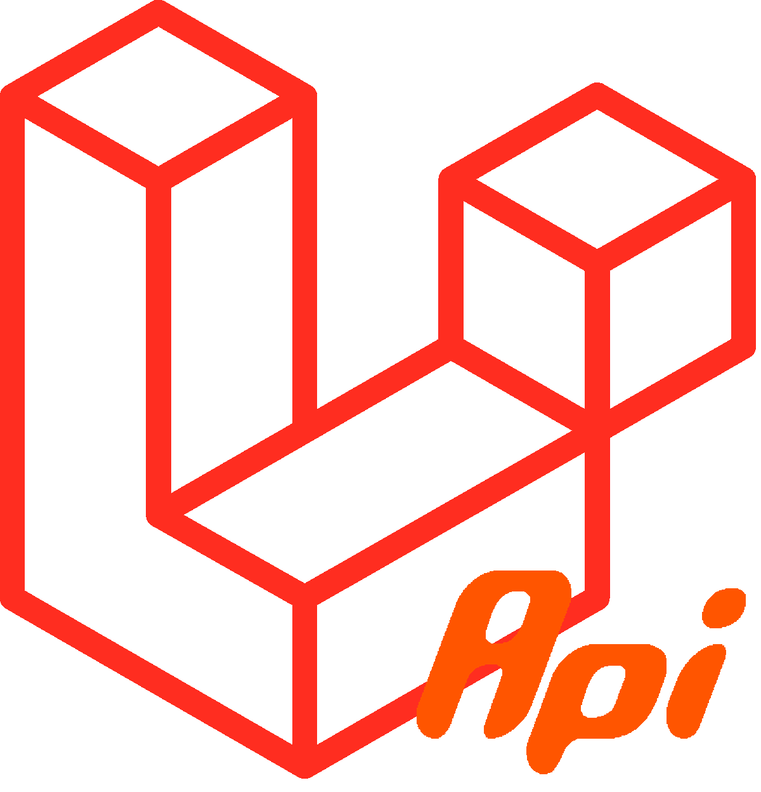

{{ laravel API }}------ CORS ------
Cross origin resources sharing
به اشتراک گذاری منابع متقابل
یک مکانیسم http header است که بررسی می کند که آیا سرور به منابع خارجی برای ارسال درخواست اجازه می دهد یا نه.
در این اصل مرورگر هدرهایی را ارسال می کند که نشان می دهد درخواست ارسالی واقعی است.
نمونه ای از cross-origin request این است که درخواست از دامنه a با جاوااسکریپت و ایجکس به دامنه b فرستاده می شود تا اطلاعاتی در قالب json دریافت کند.
برای حفظ امنیت, مرورگرهای مدرن cross-origin HTTP requests را که از اسکریپت ها می ایند، محدود می کنند.
در حالت عادی web application به request هایی اجازه عبور می دهد که از api مشابه web application باشند.
در غیر این صورت اگر دامنه و web application متفاوت باشد و درخواست به منبع دیگر ارسال شود باید شامل CORS headers های مناسب باشد.
مکانیسم CORS از درخواستهای امن و انتقال داده بین مرورگرها و سرورها پشتیبانی می کند
مرورگرهای مدرن از CORS در API هایی مانند XMLHttpRequest یا Fetch استفاده می کنند تا خطرات درخواست های HTTP مبدا را کاهش دهند.
مرورگر های مدرن front درخواست های http cors را مدیریت می کنند اما هندل اصلی توسط سرور انجام می شود.
در داخل css دستور @font-face از cors برای دریافت فونت ها ttf استفاده می کند.
یک CORS استاندارد کار می کند با اضافه کردن یک http header که به سرور می فهماند که اجازه دسترسی برای گرفتن اطلاعات بدهد.
قبل از ارسال درخواست به سرور مرورگر با سرور هدف تعامل می کند و بررسی می کند که ایا سرور اجازه دریافت اطلاعات را می دهد یا خیر.
خرابی CORS منجر به خطا می شود ، اما به دلایل امنیتی ، جزئیات مربوط به خطا در دسترس جاوا اسکریپت نیست و تنها در کنسول مرورگر می توانیم ببینیم که ارور CORS روی داده است.
Access-Control-Allow-Origin: *
می گوید که هر مبدایی با هر ادرسی می تواند به سرور ما درخواست ارسال کند و اطلاعات دریافت کند.
Access-Control-Allow-Origin: https://foo.example
یعنی هیچ دامنه ای غیر از https: //foo.example نمی تواند به سایت ما درخواست ارسال کند.
به درخواستی که توسط مرورگر برای بررسی اجازه سرور قبل از درخواست اصلی ارسال می شود preflight می گویند.
Access-Control-Request-Method: POST
با این دستور می توان نوع متودی که اجازه درخواست به سرور را دارد مشخص کرد
Access-Control-Request-Headers
این مورد مشخص می کند که درخواست اصلی شامل چه هدرهایی است و به سرور اجازه می دهد که تصمیم بگیرد یا درخواست را با این هدرها بپذیرد یا رد کند.
سربرگ Access-Control-Allow-Origin شیوه به اشتراک گذاری منابع را با دامنههای خارجی تعیین میکند.
این مقدار در بیشتر اوقات برابر با * است که به معنای اجازه به اشتراک گذاری منابع با هر دامنه دیگری است. گاهی اوقات نیز ممکن است این مقدار برابر با یک لیست از وبسایتهای مختلف باشد که تنها اجازه اشتراک گذاری با آنها داده میشود
سربرگ HTTP جایی است که قرار است برای مدیریت CORS به ما کمک بکند.
same-origin
یک پروتکل به شدت ضعیف و محدود کننده است که فقط اجازه می دهد اطلاعات را از یک origin با دامنه و پورت یکسان دریافت کنیم. یعنی فقط به درخواستی اطلاعات داده می شود که روی دامنه سایت ارسال شده باشد و نه از مبدا دیگری.
مرورگر فقط یک header خاص را برای مجاز دانستن درخواست های cross-origin می خواهد و آن هم Access-Control-Allow-Origin می باشد. مقداری که به این header می دهید مشخص خواهد کرد که چه مقصد هایی می توانند به این منبع (سرور ما) درخواست ارسال کنند.
به طور مثال اگر قرار است وب سایت https://mywebsite.com به سرور و وب سایت ما (مثلا https://api.mywebsite.com) دسترسی داشته باشد باید آن را به header ذکر شده پاس بدهیم:
یعنی سایتی که درخواست را برای ما ارسال می کند آدرس خودش را در هدر مشخص کرده باشد.
حالا این مورد با Access-Control-Allow-Origin که در سمت سرور ست شده است مقایسه می شود. اگر این دو یکی نباشند اجازه ارسال درخواست را نخواهید داشت.
در نظر داشته باشید که Access-Control-Allow-Origin می تواند مقدار * را نیز بگیرد که در این صورت تمام درخواست های CORS از هر منبعی مجاز خواهند بود. انجام این کار پیشنهاد نمی شود چرا که خطرات امنیتی خاص خودش را دارد.
------ HTTP Protocol ------
مخفف Hyper Text Transfer Protocol است و به ارتباط میان سرویس دهنده (Server) و سرویس گیرنده (Client) می پردازد.
چون کل سند HTML و سایر فایل های همراه مانند اسکریپت ها و استایل ها خیلی متن بزرگی را می سازند به همین علت به Hyper Text اشاره می شود.
ما یکسری http request و یکسری http response داریم.
زمانی که کاربر درخواست می دهد یک http request به سمت سرور ارسال می شود و سرور با توجه به درخواست یک http response برمی گرداند. پس از تحویل پیام، سرور اتصال را می بندد به همین دلیل HTTP یک پروتکل بی حالت یا stateless است. یعنی نمی تواند هیچ اطلاعاتی از اتصال را درخود نگه دارد.
هر دو پیام http request و http response شامل بخش های زیر هستند.
- خط آغاین
- صفر یا چند خط هدر
- یک خط خالی
- یک متن پیام اختیاری
HTTP/1.0 200 OK
Content-Type: text/html
Content-Length: 1345
<html>
<body> .... </body>
</html>
------ HTTPS ------
مشکل اصلی HTTP این است که داده ها را رمزنگاری نمی کند و به همین دلیل شخصی ثالث می تواند به راحتی این اطلاعات دست پیدا کند. اما می توان به راحتی با HTTPS امنیت را به درجه بالاتری برد.
برای انجام این کار باید از گواهینامه SSL استفاده کنیم. این گواهینامه به منظور ایجاد یک لایه امنیتی در اتصال بین مرورگر و سرور انجام می شود. این موضوع برای سایت هایی که فعالیت اقتصادی دارند و یا از درگاه پرداخت آنلاین استفاده می کنند، بسیار بااهمیت است.
------ Headers ------
http headers حاوی اطلاعاتی در رابطه با نوع درخواست ما هستند. همچنین یک رابط را بین کلاینت و پاسخ سرور ایجاد می کنند.
Http Headers به 3 دسته تقسیم میشوند.
1. Http Request Headers
2. Http General Headers
3. Http Response Headers
در حقیقت وظیفه هدر ها این است که یکسری اطلاعات را به سرور یا مرورگر بدهند تا براساس این اطلاعات مرورگر یا سرور کارخاصی را انجام دهند. مثلا پاسخ با فرمت خاص مانند json برگردانند.
---- Http Request Headers --- -
به هدرهایی که در زمان request یا درخواست به سرور ارسال می شوند، می گوییم. مثلا وقتی به عنوان یک درخواست دهنده از طریق یک Http Client Device مثل browser- command line- postman- android device و ... درخواست ارسال می کنید، می توانید Request Header ست کنید.
یکسری هدرهای مربوط به request
Accept: به معنی انواع mime-type هایی که مرورگر کلاینت پشتیبانی می کند
Accept: text/html,text/css,text/plain,application/json,application/xhtml+xm,...
Host: مشخص کننده نام هاستی که به آن درخواست ارسال می شود.
Host: example.io
User-Agent: اطلاعات دستگاه درخواست دهنده. مثلا دستگاه با سیستم عامل مک و مرورگر فایرفاکس
User-Agent: Mozilla/5.0 (Macintosh; intel Mac OS X 10.13; rv:64.0) Gecko/20100101 Firefox/64.0
Referer: مشخص می کند که از کجا به اینجا آمده. مثلا ار گوگل به سایت دیجی کالا رفتم. این می شود به شکل زیر. درواقع به نوعی معادل همان دکمه back مرورگر است.
Referer: http://google.com
Accept-Language: زبان مورد نظر. در برخی وبسیات های چند زبانه مانند گوگل به ازای این هدر اطلاعات به شکل زیر باز می گردند.
Accept-Language: en-US,fr-CA,...
Authentication: برای احراز هویت است که شامل بخش های زیر است.
- Basic Auth
-Bearer Token
- Api Key
- OAuth 2.0
- ...
Authentication: Basic AxVubdkokDFjhdfkl YM== ==> تقریبا منسوج شده
Authorization: Bearer <token>
X-API-Key: dskljfkdj34343
Authorization: Bearer FDSFvksdf_fsdjf
---- HTTP General Headers ----
هدرهایی هستند که در هم در request و هم در response وجود دارند. برخی از این موارد عبارتند از:
Date: زمان ارسال درخواست یا دریافت پاسخ را مشخص می کند.
Date: Sun, 16 Dec 2018 12:25:21 GMT
Content-Type: این هدر در زمان ارسال پاسخ به کلاینت می فهماند که data های پاسخ با فرمتی ارسال شوند. همچنین در زمان ارسال درخواست به سرور کلاینت به وسیله این هدر به سرور می گوید که داده ها ورودی درخواست با چه فرمتی به سمت سرور ارسال شوند. application/json
یکی از راه های ارسال درخواست، فرم های HTML هست. ویژگی enctype در فرم به معنای این است که نوع داده ای که به سمت سرور می فرستیم چگونه است. دقیقا مقدار این ویژگی در هدر قرار می گیرد.
مقادیر در دسترس برای enctype به شرح زیر هستند.
application/x-www-form-urlencoded: به طور پیشفرض در این نوع space به + و کاراکترهای خاص به مقادبر ASC معادلشان encode می شوند.
multipart/form-data: داده همراه مقدار فایل
text/plain: نوع ساده. همان کار application/x-www-form-urlencoded را انجام می دهد با این تفاوت که کاراکترهای خاص encode نمی شوند.
application/json: اگر از کلاینت دیگری استفاده می شود که نیاز است داده های ورودی در قالب JSON ارسال شود، می توان مقدار enctype را برابر application/json قرار داد.
---- HTTP Response Headers -----
هدرهایی که توسط سرور در زمان ارسال پاسخ به کلاینت، ارسال می شوند. این هدرها چون توسط سرور کنترل می شوند، در مرورگر قابل تغییر نمی باشند. برخی از این هدرها عبارتند از:
Server: اطلاعاتی در ارتباط با سرور ارسال می کند.
Server: LiteSpeed
Set-Cookie: کوکی هایی که به دستور سرور باید در مرورگر کاربر ذخیره شوند.
Location: آدرس url که کاربر باید به آن ارسال شود. به طور کل از این هدر برای ارسال کاربر به مکان های مختلف پس از انجام پردازش استفاده می شود.
Content-length: طول Entity-body مربوط به response
WWW-Authenticate: این هدر نوع الگوریتم authentication را تعیین می کند.
------ Status Code ------
به این موارد کدهای وضعیت گفته می شود که 3 رقمی هستند و توسط سرور در پاسخ به درخواستی که از طرف کلاینت به سرور ارسال شده است، صادر می شوند.
این کدها به معنای مکالمه بین کلاینت و سرور هستند و سالم بودن یا وجود مشکل، به وسیله این کدها اعلام می شود.
عدد اول کدهای وضعیت نشان می دهد که این کدها در کدام یک از 5 گروه اصلی کدهای وضعیت قرار دارند.
Status code ها به طور کلی به 5 گروه زیر تقسیم می شوند.
1. 1xx --> اطلاعاتی: سرور درخواست شما را دریافت کرده و روند ادامه دارد.
2. 2xx --> موفقیت آمیز: درخواست موفقیت آمیز بوده و کلاینت اطلاعات مورد نظر را دریافت کرده است.
3. 3xx --> تغییر مسیر: این سری معمولا کدهای مربوط به ریدایرکت هستند. این به این معنی است که مجددا هدایت شوید به یک آدرس خاص و تکمیل درخواست به اقدامات بیشتری نیازی دارد.
4. 4xx --> خطای کاربر: دسترسی به وبسایت یا صفحه مورد ممکن نیست. معمولا صفحه غیرقابل دسترسی است یا درخواست یه نحو مناسبی ارسال نشده است.
5. 5xx --> خطای سرور: در حالی که درخواست معتبر است، سرور نمی تواند درخواست را انجام دهد. (مشکل از سمت سرور)
پرکاربردترین status code ها
100 => سرور به مرورگر میگه که من اطلاعات را دریافت کردم.
101 => برای تغییر پروتکل است. مثلا میخواهیم پروتکل را از http1.0 به http1.1 تغییر دهیم.
102 => گاهی درخواست کاربر به سرور به زمان زیادی نیاز دارد تا پاسخ برگردد. در این صورت سرور به مرورگر میگه که من اطلاعات رو دریافت کردم و در حال پردازش آن هستم.
200 => به معنای موفقیت است و OK. یعنی درخواست به درستی انجام شده و پاسخ هم برگردانده شده است.
201 => به معنای created است. برای مثال ما می گوییم به سرور که فلان post رو ایجاد کن در دیتابیس. سرور پست را ایجاد می کند و در جواب موفقیت آمیز بودن آن 201 برمی گرداند.
202 => یعنی request دریافت شده است توسط سرور اما هنوز پردازش شروع نشده است.
204 => به معنای non-content است و یعنی سرور اطلاعات خاصی برنگردانده است. مثالا وقتی پست را حفظ می کنیم، هیچ اطلاعاتی نیاز نیست برگردد. که در این صورت می توانیم از این کد استفاده کنیم.
301 => به معنای permanent redirect است و یعنی ریدایرکت دائمی
302 => temporary redirect یا ریدایرکت موقت
400 => bad request : درخواست به درستی ارسال نشده و سرور نمی تواند آن را پردازش کند.
401 => Unauthorized: یعنی برای انجام این درخواست شما باید لاگین کرده باشید اما هنوز لاگین نکرده اید.
403 => Forbidden: یعنی اجازه استفاده از این درخواست به شما داده نشده است. شما مجوز استفاده ندارید.
404 => not Found : درخواست مورد نظر قابل اجرا نیست چون اصلا وجود ندارد. مثال شما کامنت ها رو درخواست کردی اما سرور اصلا کامنتی ندارد که برگرداند.
500 => همچی اوکی است اما سرور به هر دلیل نمی تواند پاسخ را برگرداند.
------ API & Rest Architecture ------
API ==> مخفف Application Programming Interface است و به زبان ساده یعنی بخشی از برنامه است که وظیفه ارائه اطلاعات را دارد. پس از دریافت درخواست یک نرم افزار، یک پاسخ به همراه اطلاعات درخواست شده برمی گرداند به درخواست کننده.

API ==> رابط برنامه نویسی اپلیکیشن
انواع API
- API سخت افزاری ==> مثلا یک بازی سنگین انجام می دهیم. فن درخواست می دهد که فن روشن شود. این یک درخواست است.
- API سیستم عاملی ==> یک برنامه در سیستم عامل برنامه دیگری را صدا بزند.
- API زبان های برنامه نویسی ==> استفاده از توابع یک زبان برنامه نویسی برای ایجاد یک کتابخانه.
- کیت های توسعه نرم افزار (SDK)
- API تحت وب یا وب سرویس ==> هدف ما در وبسایت ها
انواع API تحت وب یا وب سرویس
1. PRC: مخفف Programmable Remote Client است که در دو نوع JSON-PRC و XML-PRC عرضه شده است.
2. SOAP: مخفف Simple Object Access Protocol است که پروتکلی است که متود ارتباط، نحوه ارسال درخواست، دریافت پایخ و همچنین فرمت پاسخ ها را تعیین می کند. به عبارت دیگر این شکل از API راهی است که از آن طریق سیستم ها از طریق فرمتی که قابل درک برای هر دو طرف کانکشن است می توانند با یک دیگر ارتباط برقرار کنند.
برخی درگاه های بانکی از SOAP استفاده می کنند. اما محبوبیت آن بسیار کمتر شده است و همه به سمت استفاده از REST رفته ااند.
3. REST: مخفف Representational State Transfer است که برخلاف موارد قبلی یک پروتکل به حساب نمی آید و نوعی معماری قدرتمند است که نسبت به بقیه کاربر آسان تری دارد و به همین دلیل امروز فراگیرتر شده است. (محبوب تر و پرکاربرد تر)
4. GraphQL: استانداردی جدیدتر نسبت به REST است که برای طراحی و توسعه API به کار می رود و به شکل open source توسط فیسبوک ارائه شده است. این معماری در پاسخ به نقدها و برخی مشکلات REST ارائه شده است تا بتواند راهکار جامع و اثربخش تری در توسعه API باشد.
------ REST ------
زمانی که ما از REST استفاده می کنیم یعنی داریم یک لایه خاص با کاربرهای ویژه را روی سرور خود برای ارتباط با API ها قرار می دهیم.
متودهای REST
GET: برای بازیابی و خواندن اطلاعات
POST: معمولا برای ایجاد دیتای جدید استفاده می شود.
PUT & PATCH: برای دستکاری و اپدیت منبع مورد استفاده قرار می گیرد.
DELETE: برای حذف یک منبع کاربر دارد.
تفاوت PUT و PATCH
برای مثال می خواهیم یک کامنت را اپدیت کنیم. PUT می اید بررسی می کند که آیا کامنت مورد نظر وجود دارد. اگر وجود داشت آن را اپدیت می کند اما اگر وجود نداشت، آن را ایجاد می کند و بعد اپدیتش می کند اما PATCH تنها اپدیت می کند و کاری به بودن یا نبودن منبع مورد نظر ندارد.
این متود ها استانداردهای REST هستند و REST را می سازند. شما می توانید از متود POST برای حذف استفاده کنید اما قوانین و اصول REST را دارید به هم می زنید و کارتان استاندارد نیست و برای برنامه نویسان بعدی که می خواهند کد را بخوانند مشکل ایجاد میکند.
در مبحث API به url هایی که به آن درخواست ارسال می کنیم End point گفته می شود.
GET http://ex.com/api/posts // Get Posts
GET http://ex.com/api/posts/1 // Get post with id 1
POST http://ex.com/api/posts // create Post
PUT or PATCH http://ex.com/api/posts/1 // update Post
DELETE http://ex.com/api/posts/1 // delete
------ init in laravel ------
در rest اکثر درخواست ها json است.
در لاراول باید بهتر است به جای return کردن خالی response از متود response استفاده کنیم.
متود json خوش کالکشن های لاراول و آرایه ها یا هرچیزی که به آن بدهیم را به json تبدیل می کند.
به عنوان پارامتر دوم که اختیاری است می توانیم status code که مدنظرمان است را پاس دهیم.
return [
'name' => 'ali api'
];
// best
return response()->json([
'name' => 'ali api'
]);
return response()->json(Post::all());
return response()->json(Post::all() , 200); // with send status code
کد زیر یکی از استانداردترین ساختارهایی است که می توانیم در پاسخ برگردانیم.
در قسمت message می توانیم دلیل ارور یا جمله موفقیت ذکر کنیم.
return response()->json([
'status' => "success",
"message" => 'msg',
"data" => Post::all(),
"code" => 200
] , 200);
خوب زمانی که از API استفاده می کنیم نیاز داریم از این ساختار در جاهای زیادی استفاده کنیم به همین دلیل آن را داخل یک تابع قرار می دهیم تا هروقت نیاز به تغییر بود تنها یکجا را تغییر دهیم. از سوی دیگر هر جا نیاز بود تنها تابع را صدا بزنیم به جای این ساختار طولانی.
برای این کار می توانیم یک کنترلر با نام ApiController یا هر نامی که خواستیم بسازیم و کدهای زیر را درآن قراد دهیم و بعد هرجا که نیاز بود متود را صدا بزنیم.
برای راحتی بیشتر ابتدا داخل پوشه app یک پوشه می سازیم و اسم آن را Traits می گذاریم. حالا داخل آن یک فایل برای مثال با نام ApiResponse.php ایجاد می کنیم و کدها زیر را در آن قرار می دهیم. بعدا هرجا نیاز بود این trait را use می کنیم.
<?php
namespace App\Traits;
trait ApiResponse{
protected function APIResponse($data, $code ,$status,$message = null)
{
return response()->json([
'status' => $status,
"message" => $message,
"data" => $data,
"code" => $code
] , $code);
}
}
// in ApiController
use App\Traits\ApiResponse;
class ApiController extends Controller
{
use ApiResponse;
{
//usage
class PostController extends ApiController {
public function index(){
return $this->APIResponse('',500,"error","Error");
return $this->APIResponse(Post::all(),200,"success","ok Created");
}
}
توجه زمانی که از Api استفاده می کنیم و روت ها خود را در api.php می نویسیم نیازی به ارسال csrf نداریم.
زمانی که از Api استفاده می کنیم برای validation نمی توانیم از متود validation مانند حالت عادی استفاده کنیم زیرا این متود اگر به ارور بخورد ما را ریدایرکت بک می کند و ما این را نمی خواهیم و می خواهیم ارورها را بگیریم و در پاسخ برگردانیم.
برای این کار و اعتبارسنجی باید از فساد Validator لاراول استفاده کنیم.
$validator = Validator::make($request->all(),[
"title" => 'required|string',
"body" => 'required|string',
"image" => 'required',
"user_id" => 'required'
]);
if($validator->fails()){
return $this->APIResponse('',422,"error", $validator->messages());
}
ارورهای بالا ارورهایی هستند که به دنبال validation ایجاد می شوند اما ما یکسری ارور دیگر هم داریم. برای مثال زمانی که ایدی 41 درخواست می شود و ما پستی با ایدی 41 نداریم در این صورت ارور 404 رندر می شود. برای کنترل این این ارورها در بحث API باید به پوشه app/Exceptions/Handler.php برویم و کدهای زیر را درآن قرار دهیم.
use App\Traits\ApiResponse;
// inside Handler class
public function render($request, Throwable $e)
{
if($e instanceof ModelNotFoundException){
return $this->APIResponse('',404,"error", $e->getMessage() );
}
if($e instanceof NotFoundHttpException){
return $this->APIResponse('',404,"error", $e->getMessage() );
}
/// =---------------------------------------------- p2
if(config('app.debug')){
return parent::render($request,$e);
}
return $this->APIResponse('',500,"error", $e->getMessage() );
}
تمام ارورهای مربوط به مشکلات سیستمی مانند 404 و ... که لاراول آن ها را هندل می کند را می توانیم داخل این متود قرار دهیم تا در صورت بروز ارور چیزی که ما می خواهیم به عنوان response ارسال شود.
قسمت P2 به ما کمک می کند تا در response در postman اطلاعات کاملی از ارور کسب کنیم و اسم کلاس ارور آن مثل اسم کلاس ModelNotFoundException یا NotFoundHttpException را برای هر اروری متوجه شویم و کد مورد نظر برای آن را داخل کلاس بالا قرار دهیم.
همچنین این کد در زمانی که در حالت دیباگ هستیم کار می کند و در غیر اینصورت برای همه ارورهایی که در بالا آن ها را تعریف نکرده ایم ارور 500 برگشت داده میشود.
در هنگام استفاده از postman حتما Accept در بخش Headers اضافه کنیم و آن را برابر application/json کنیم تا ارور ها به شکل json نمایش داده شوند.
------ Route Group API resources ------
php artisan make:controller UserController --api
// in api.php
Route::apiResource('users' , UserController::class);
حالا می توانیم روت هایی که این دستور ایجاد می کند را با دستور زیر در cmd ببنیم.
php artisan route:list
GET api/users users.index @index
GET api/users/{user} users.show @show
POST api/users users.store @store
PUT|PATCH api/users/{user} users.update @update
DELETE api/users/{user} users.destroy @destroy
------ API Resources ------
یکی از ویژگی های این بخش از لاراول این است که ما اجازه می دهد transform انجام دهیم. یعنی دیتاهایی که سمت کاربر ارسال می کنیم را تغییر دهیم. همچنین به ما اجازه بررسی شرط ها و pagination را هم می دهد.
برای استفاده از این ویژگی لاراول باید یک Resources ایجاد کنیم تا به عنوان یک لایه بین مدل و جوابی که به کاربر ارسال می کنیم باشد. برای ایجاد Resources از دستور زیر استفاده می کنیم.
php artisan make:resource PostResource
حالا این دستور در داخل مسیر app/Http یک پوشه Resources ایجاد می کند و یک فایل با نامی که زدیم در آن قرار می دهد.
class PostResource extends JsonResource
{
/**
* Transform the resource into an array.
*
* @param \Illuminate\Http\Request $request
* @return array|\Illuminate\Contracts\Support\Arrayable|\JsonSerializable
*/
public function toArray($request)
{
return parent::toArray($request);
}
}
// usage
// in controller
public function show(Post $post)
{
return new PostResource($post);
// OR in self method
return $this->APIResponse(new PostResource($post),200,"success","ok found");
}
حالا برای transform و تغییر اطلاعاتی که ارسال می شود می توانیم به شکل زیر عمل کنیم.
public function toArray($request)
{
// return parent::toArray($request);
return [
'id' => $this->id,
'title' => strtoupper($this->title),
'body' => $this->body,
'created_at' => $this->created_at,
"testResource" => "handle amount"
];
}
// output
{
"status": "success",
"message": "ok found",
"data": {
"id": 1,
"title": "سرما",
"body": "سرما بد است",
"created_at": "2021-06-21 00:19:00",
"testResource": "handle amount"
},
"code": 200
}
توجه کنید که هرچیزی که در این ارایه اسم آن را ذکر نکرده ایم در response هم نخواهد بود. همچنین به راحتی می توانیم هر چیز دیگری را که می خواهیم جدا از فیدهای دیتابیس به این اضافه کنیم. مثلا مورد زیر در مثال بالا
"testResource" => "handle amount"
یا حتی می توانیم اسم فیلدها را آنطور که دوست داریم قرار دهیم مثلا اسم در دستابیس title است ما می توانیم title را دا key مثلا name به کاربر ارسال کنیم.
'name' => strtoupper($this->title), //"name": "سرما",
تغییر فرمت زمان یا استفاده از verta
'created_at' => $this->created_at->format("Y-m-d H:i:s"), //"created_at": "2021-06-21 00:19:00",
استفاده ها از این روش برای کالکشن های لاراول با مشکل رو به رو هستیم. همین دلیل لاراول یکسری توابع برای این منظور در اختیار ما قرار می دهد.
برای حل این مشکل می توانیم از دو روش زیر استفاده کنیم.
return $this->APIResponse(PostResource::collection($post),200,"success","ok found"); // collection method
در این روش ممکن است اگر مقدار null داشته باشیم به ارور بخوریم.
روش دوم ساخت یک collection resource است یعنی از همان ابتدا resource خود را از نوع کالکشن بسازیم.
php artisan make:resource Post --collection
or
php artisan make:resource PostCollection
اگر به انتهای نام collection اضافه کنیم، خود لاراول متوجه می شود و resource از نوع کالکشن ایجاد می کند.
حالا زمانی که ایجاد شد همان کدهایی که در resource اصلی قرار داده بودیم یعنی دیتاهایی که باید برگردانده شود و ... را نمی توانیم در این شکل قرار دهیم و حتما باید به شکل زیر باشد
return parent::toArray($request);
//usage
return $this->APIResponse(new PostCollection($posts),200,"success","ok found");
کل روش اول بهتر است و نیازی نیست بیخودی کالکشن مجزا ایجاد کنیم.
return $this->APIResponse(PostResource::collection($posts),200,"success","ok found");
در حالت عادی لاراول response ها را در wrapper با نام data قرار می دهد که ما می توانیم نام این را به هرچیزی که می خواهیم تغییر دهیم.
"data": [
{
"id": 1,
"title": "سرما",
"body": "سرما بد است",
"created_at": "2021-06-21 00:19:00",
"testResource": "handle amount"
}
]
برای این منظور داخل کلاس resource مورد نظرمان تکه کد زیر را قرار می دهیم.
public static $wrap = "response";
اما در این صورت اگر بخواهیم برای همه resource نام wrap را تغییر دهیم باید در همه آن ها این کد را قرار دهیم که در این صورت اگر بعدا خواستیم این نام را تغییر دهیم باید حتما در همه resource ها دوباره تغییر ایجاد کنیم. برای جلوگیری از این کار لاراول به ما امکان می دهید تغییر Wrapper را در serviceProvider انجام دهیم تا در همه resource ها اعمال شود.
// in AppServiceProvider
public function boot()
{
JsonResource::wrap('test');
}
یا کلا می توانیم این wrapper را برداریم.
JsonResource::withoutWrapping();
------ with Function ------
گاهی می خواهیم یکسری دیتا خارج از data در response قرار دهیم و ارسال کنیم.
in resource
public function with($request)
{
return [
'foo' => [
'key' => 'value'
]
];
}
حالا همراه data در response این ارایه هم برگردانده می شود. البته در صورتی که به روش زیر برگردانیم
return new PostResource($post);
// output
data:{
id: 1
..
},
foo:{....}
ولی اگر قالب تعریف کردیم دیگر نیازی نیست که این فانکشن With را ایجاد کنیم و کافی است به همان قالب اضافه کنیم.
return $this->APIResponse([
"data" =>new PostResource($post),
"foo" =>['bar'],
],200,"success","ok found");
// output
"data": {
"data": {
"id": 1,
"title": "سرما",
},
"foo": [
"bar"
]
},
روش دومی هم استفاده از متود additional است
return (new PostResource($post))->additional([
"foo" =>['bar'],
]);
// output
"data": {
"id": 1,
"title": "سرما",
},
"foo": {
"key": "value",
"0": "bar"
}
در کل روش دوم بهتر است.
------ Relations ------
برای ایجاد relation ابتدا برای هر دو user و post بخش resource را ایجاد می کنیم.
بعد در مدل user رابطه را می نویسیم.
public function posts()
{
return $this->hasMany(Post::class);
}
بعد در کنترلر به شکل زیر صدا می زنیم
$users = User::all();
return UserResource::collection($users->load('posts'));
همچنین در user resource هم به شکل زیر عمل می کنیم.
return [
"id"=> $this->id,
"name"=> $this->name,
"email"=> $this->email,
"created_at"=> $this->created_at,
"posts" => $this->whenLoaded('posts')
];
//output
{
"data": [
{
"id": 1,
"name": "ali",
"email": "ali@gmail.com",
"created_at": null,
"posts": [
{
"id": 1,
"title": "سرما",
"body": "سرما بد است",
"image": "j.png",
"user_id": 1,
"created_at": "2021-06-21T00:19:00.000000Z",
"updated_at": "2021-06-22T00:00:31.000000Z"
},
{
"id": 5,
"title": "port",
"body": "Ipsa dolore modi temporibus modi provident unde.",
"image": "g.pom",
"user_id": 1,
"created_at": "2021-10-10T12:03:09.000000Z",
"updated_at": "2021-10-10T12:03:09.000000Z"
}
]
}
]
}
حالا می بینیم که کل اطلاعات پست ها را آورده است اما ما می خواهیم در یک قالب هرچی را می خواهیم برگردانیم.
return [
"id"=> $this->id,
"name"=> $this->name,
"email"=> $this->email,
"created_at"=> $this->created_at,
"posts" => PostResource::collection($this->whenLoaded('posts')),
];
اگر چند ارتباط داشتیم باید به شکل زیر عمل کنیم
// in controller
$users = User::all();
return UserResource::collection($users->load('posts')->load('comments'));
// in resource
return [
"id"=> $this->id,
"name"=> $this->name,
"email"=> $this->email,
"created_at"=> $this->created_at,
"posts" => PostResource::collection($this->whenLoaded('posts')),
"comments" =>CommentResource::collection($this->whenLoaded('comments'))
];
//output
{
"data": [
{
"id": 1,
"name": "ali",
"email": "ali@gmail.com",
"created_at": null,
"posts": [
{
"id": 1,
"title": "سرما",
"body": "سرما بد است",
"created_at": "2021-06-21 00:19:00",
"testResource": "handle amount"
},
{
"id": 5,
"title": "PORT",
"body": "Ipsa dolore modi temporibus modi provident unde.",
"created_at": "2021-10-10 12:03:09",
"testResource": "handle amount"
}
],
"comments": [
{
"id": 1,
"title": "علت",
"text": "ملت"
}
]
}
]
}
------ Paginate ------
// in controller
$posts = Post::paginate(2);
return $this->APIResponse([
'posts' => PostResource::collection($posts),
'links' => PostResource::collection($posts)->response()->getData()->links,
'meta' => PostResource::collection($posts)->response()->getData()->meta,
],200,"success","ok Created");
//output
{
"status": "success",
"message": "ok Created",
"data": {
"posts": [
{
"id": 1,
"title": "سرما",
"body": "سرما بد است",
"created_at": "2021-06-21 00:19:00",
"testResource": "handle amount"
},
{
"id": 2,
"title": "گرما",
"body": "گرمابد است",
"created_at": "2021-06-21 00:19:00",
"testResource": "handle amount"
}
],
"links": {
"first": "http://localhost:8000/api/posts?page=1",
"last": "http://localhost:8000/api/posts?page=3",
"prev": null,
"next": "http://localhost:8000/api/posts?page=2"
},
"meta": {
"current_page": 1,
"from": 1,
"last_page": 3,
"links": [
{
"url": null,
"label": "« Previous",
"active": false
},
{
"url": "http://localhost:8000/api/posts?page=1",
"label": "1",
"active": true
},
{
"url": "http://localhost:8000/api/posts?page=2",
"label": "2",
"active": false
},
{
"url": "http://localhost:8000/api/posts?page=3",
"label": "3",
"active": false
},
{
"url": "http://localhost:8000/api/posts?page=2",
"label": "Next »",
"active": false
}
],
"path": "http://localhost:8000/api/posts",
"per_page": 2,
"to": 2,
"total": 6
}
},
"code": 200
}
------ ورژن بندی ------
فرض کنید ما یک برنامه نوشتیم و API آن را تکمیل کرده و به برنامه نویس موبایل دادیم. او هم با توجه به response ها ما یک نسخه از یک برنامه را گسترش داده است. مثلا م الان به یک api درخواست می فرستیم و می گوییم که محصولات را برگردان و نام را در قالب title برگردان. برنامه نویس موبایل هم بر این اساس یک نسخه از برنامه را توسعه داده است اما بعد از مدتی به دلایلی می خواهیم title را به name تبدیل کنیم. خوب در این صورت برنامه نویس موبایل هم باید یک نسخه جدید منتشر کند و مشکل از اینجا شروع می شود که افرادی که از نسخه های قبلی استفاده می کنند، در ارتباط با سرور به مشکل خواهد خورد. مطمئنا تمام افرادی که App دیجی کالا را از قبل داشته اند، بلافاصله بعد از اعمال تغییرات، قرار نیست App جدید را دانلود کنند.
برای حل این مشکل باید ورژن بندی انجام دهیم.
برای ورژن بندی کردن باید route ها را ورژن بندی کنیم و همچنین باید برای هر ورژن کنترلر و resource جدید در نظر بگیریم. با اینکار اگر مثلا ما ورژن 100 را منتشر کرده باشیم، ورژن 1 هنوز به درستی کار می کند و در دسترس است.
http://www.laravel.com/api/v2.2.3/posts
// in route
/******
*
* @version
* ---- v1
*/
Route::prefix('v1')->group(function(){
Route::get('/gallery' , [V1GalleryController::class , 'index']);
});
/******
*
* @version
* ---- v2
*/
Route::prefix('v2')->group(function(){
Route::get('/gallery' , [V2GalleryController::class , 'index']);
});
// in Resource V1
return [
'title' => $this->title,
'type' => $this->type,
"image" => $this->image
];
// in Resource V2
return [
'title' => $this->title,
'type' => $this->type,
"file" => $this->image
];
// in Controller v1
$gallery = Gallery::all();
return $this->APIResponse(GalleryResource::collection($gallery),200,"success","ok Created");
// GalleryResource ==> use App\Http\Resources\V1\GalleryResource;
// in Controller v2
$gallery = Gallery::all();
return $this->APIResponse(GalleryResource::collection($gallery),200,"success","ok Created");
// GalleryResource ==> use App\Http\Resources\V2\GalleryResource;
// output v1
{
"status": "success",
"message": "ok Created",
"data": [
{
"title": "nature",
"type": "png",
"file": "lop.png"
},
{
"title": "fire",
"type": "jpg",
"image": "pcr2.jpg"
}
],
"code": 200
}
// output v2
{
"status": "success",
"message": "ok Created",
"data": [
{
"title": "nature",
"type": "png",
"file": "lop.png"
},
{
"title": "fire",
"type": "jpg",
"file": "pcr2.jpg"
}
],
"code": 200
}
------ authentication ------
لاراول برای سیستم Auth با Api دو پکیج passport و sanctum دارد.
در حالت عادی زمانی که در سایت لاگین می کنیم، سرور یک سشن در مرورگر ذخیره می کند. به این روش session base می گویند که یه دنبال همکاری سشن ها و کوکی ها برای سایت های عادی استفاده می شود.
اما در Api به این شکل نیست، زیرا ممکن است درخواست از موبایل ارسال شود یا از App ها دسکتاپ یا سایت ها با دامنه های دیگر.
برای حل این مشکل در مبحث Api از روش token authentication استفاده می شود.
token authentication : در این روش کاربر username و password را به سرور ارسال می کند. سرور بررسی می کند. اگر همچی اوکی بود یک توکن یونیک generate می کند و در قالب یک response یا status 200 به کاربر برمی گرداند. به این توکن ساخته شده JWT یا Json Web Token می گویند. حالا کلاینت باید این توکن را در یک فضا مثل database ذخیره کند. حالا توی مرحله بعدی که خواست درخواست ارسال کند باید این توکن را هم همراه درخواست ارسال کند. سرور بررسی می کند که این توکن درست باشد. اگر اوکی بود جواب به کاربر برمی گردد.
laravel passport مبنای سیستم Auth را oAuth2 در نظر می گیرد.

oAuth: مخفف opent Authorization است. یک پروتکل استاندارد است که براساس آن اطلاعات هر کاربر بدون دادن رمز عبور به صورت محدود در اختیار برنامه های کاربردی دیگر قرار می گیرد.
این پروتکل به برنامه های کاربردی این امکان را می دهد تا بدون آن که کاربران را ملزم به افشای اطلاعات محرمانه خود مانند پسورد کنند، از طریق Api به منابع محافظت شده از یک سرویس وب دسترسی پیدا کنند.
این مکانیزم توسط آمازون، گوگل، مایکروسافت و ... استفاده می شود تا به کاربران اجازه دهد اطلاعات مربوط به حساب های خود را با برنامه های شخصی ثالث یا third party به اشتراک بگذارند.
برای مثال شما یک حساب کاربری روی gmail دارید و می خواهید در وب سایت x هم عضو شوید. یک راه این است که شما در صفحه عضویت اطلاعات خود را وارد کنید و عضو شوید و راه دیگر استفاده از oAuth است. در سیستم oAuth تنها اطلاعات محدودی از حساب شما به اشتراک گذاشته می شود.
لاراول passport برای پروژه های بسیار بزرگ است که می خواهند یک سیستم Auth کامل داشته باشند اما وقتی تنها نیاز داریم که jwt را generate کنیم و به کمک آن کاربر را لاگین کرده و اجازه دسترسی به ان بدهیم واقعا نیازی نیست که از laravel passport استفاده کنیم و لاراول sanctum به راحتی کار ما را راه می اندازد.
اما اگر می خواهیم ثبت نام با گوگل و ... را به کمک Api داشته باشیم باید از لاراول passport استفاده کنیم.
------ laravel passport ------
composer require laravel/passport
php artisan migrate
php artisan passport:install
با زدن دستور آخری موارد زیر generate می شوند.
Client ID: 1
Client secret: X2HcwQ41u5VnqVUPlFLCt5WzuNGuStpcZrQzFFBy
Password grant client created successfully.
Client ID: 2
Client secret: lNgxok4rHbOvWN4UTV57r1RMRZNtSlGwjFuUfTBk
// in user model
use HasApiTokens;
// in AuthServiceProvider -- boot method
if (! $this->app->routesAreCached()) {
Passport::routes();
}
// in config/auth
'guards' => [
'web' => [
'driver' => 'session',
'provider' => 'users',
],
'api' => [
'driver' => 'passport',
'provider' => 'users',
],
],
------ JWT ------
Json Web Token یک استاندارد برای انتقال امن اطلاعات بین مقاصد مختلف را توسط یک شی JSON تعریف می کند و به صورت Digital Sign یا امضای دیجیتال است. این امضا ساختار زیر را دارد.
Header.Peyload.Signature
Header: حاوی اطلاعاتی در ارتباط با نوع توکن + الگوریتمی است که در محاسبه JWT مورد استفاده قرار خواهد گرفت که در آن جمله می توان به SHA256 اشاره کرد.
{
"alg":"HS256",
"typ":"JWT"
}
Peyload : حاوی یکسری داده ها است که داخل توکن ذخیره خواهند شد که از جمله آن ها می تواند به سازنده توکن، تاریخ انقضا و ... اشاره کرد.
{
"sub":"1234567890",
"name":"john Doe",
"admin":true
}
Signature: همان امضای دیجیتال است که برای تولید این بخش های Header و payload به صورت encode شده داریم. به علاوه به Secret یا به عبارتی کلید رمز هم داریم. برای مثال چنانچه بحواهیم از الگوریتم HMAC SHA256 استفاده کنیم، امضای دیجیتال زیر ساخته می شود.
HMACSHA256(base64UrlEncode(header) + "." + base64UrlEncode(payload) , secret)
خروجی یک رشته طویل است که لاراول passport آن را به راحتی ایجاد می کند.
برای توضیحات بیشتر هم می توانیم به سایت خود JWT به ادرس jwt.io برویم.
توجه کنید که jwt را باید در قالب Bearer token ارسال کنیم.
------ laravel sanctum ------
لاراول sanctum یک نسخه سبک Auth است برای SPA ها و موبایل وب اپلیکیشن ها
برای SPA ها بهتر است از این پکیج استفاده کنیم زیرا هم توانایی Auth token و هم session auth را دارد. یکی از ویژگی ها برتر این پکیج این است که ما را از حملات CSRF دور نگه می دارد.
composer require laravel/sanctum
php artisan vendor:publish --provider="Laravel\Sanctum\SanctumServiceProvider"
php artisan migrate
لاراول Sanctum از jwt استفاده نمی کند و به جای آن از personal access token استفاده می کند.
in app/ Http/kernel.php
'api' => [
\Laravel\Sanctum\Http\Middleware\EnsureFrontendRequestsAreStateful::class,
'throttle:api',
\Illuminate\Routing\Middleware\SubstituteBindings::class,
],
in user model
use HasApiTokens, HasFactory, Notifiable;
-- ایجاد register در لاراول sanctum --
// api.php
Route::post('/register' , [AuthController::class , 'register']);
// in AuthController
public function register(Request $request){
$validator = Validator::make($request->all() , [
"name" => "required|string",
"email" => "required|email|unique:users,email",
"password" => "required",
"c_password" => "required|same:password",
]);
if($validator->fails()){
return $this->APIResponse('',422,"error", $validation->messages());
}
$user = User::create([
"name" => $request->name,
"email" => $request->email,
"password" => Hash::make($request->password),
]);
$token = $user->createToken('myApp')->planTextToken;
return $this->APIResponse([
"user" => $user,
"token" =>$token
],201,"success","ok Created");
}
-- Login with sanctum --
گذاشتن middleware روی روت ها برای Auth در لاراول sanctum به شکل زیر است.
::middleware('auth:sanctum')
// in api.php
Route::post('/login', [AuthController::class , 'login']);
// AuthController
public function login(Request $request) {
$validation = Validator::make($request->all(),[
"email" => "required|email",
"password" => "required"
]);
if($validation->fails()){
return $this->APIResponse('',422,"error", $validation->messages());
}
$user = User::where('email' , $request->email)->first();
if(!$user){
return $this->APIResponse('',401,"error", "user not found");
}
if(!Hash::check($request->password, $user->password)){
return $this->APIResponse('',401,"error", "pass wrong");
}
// Create Token by Laravel passpord
$token = $user->createToken('myApp')->planTextToken;
return $this->APIResponse([
"user" => $user,
"token" =>$token
],200,"success","ok Created");
}
-- logout with sanctum --
// api.php
Route::post('/logout', [AuthController::class , 'logout'])->middleware('auth:api');
// AuthController
public function logout(){
auth()->user()->tokens()->delete();
return $this->APIResponse('',200,"success","ok Logouted");
}
-- CORS --
Cross-origin Resource Sharing یعنی اشتراک گذاری منابع از چند source مختلف
Same Origin Policy: مرورگرها و دنیای وب به طوری طراحی شده اند که قانونی این نام را اجرا می کنند. این قانون می گوید مقصد درخواست های ما باید با منبعی که به آن درخواست میفرستیم یکی باشد.
زمانی مقصد درخواست و منبع یکی نیست که:
- به یک دامنه یا زیر دامنه دیگر متصل شویم.
- به یک پروتکل دیگر متصل شویم.
- به یک پورت دیگر متصل شویم.
CORS در سمت کلاینت:
در دنیای مرورگرها قانون Same Origin Policy وجود دارد و به صورت پیش فرض ما فقط می توانیم به منابعی دسترسی داشته باشیم که Same Origin از سایتی که در آن هستیم، باشد.
اما مشکل اینجاست که ما نیاز داریم به برقرای ارتباط با origin های دیگر از وب سایت های دیگر.
کلاینت می تواند از مکانیسم خاصی به نام CORS استفاده کند تا نوع خاصی از درخواست های cross-origin را ارسال کند. این عملیات یا استفاده از header های خاصی در درخواست HTTP انجام می شود.
زمانی که می خواهیم یک درخواست cross-origin به منبعی دیگر ارسال کنیم، مرورگر شما یک header خاص به نام Origin را به درخواست HTTP اضافه می کند. مقدار این هدر برابر با منبعی است که درخواست از آن ارسال شده است. سرور این درخواست را دریافت می کند و header هایش را بررسی می کند تا بداند هر درخواست از کجا آمده است.
CORS در سمت سرور:
در سرور باید header های مجموعه Access-Control را به پاسخ های سرور خود اضافه کنیم. مرورگر ها براساس مقدار این دسته از هدرها می توانند مشخص کنند که چه نوع درخواست هایی cross-origin مجاز هستند. در صورتی که Access-Control در هدر شما نباشد، تمام درخواست های cross-origin بلوکه خواهند شد.
تعداد header های مربوط به Access-Control بسیار زیاد هستند اما مرورگر فقط یک header خاص را برای مجاز دانستن درخواست های cross-origin می خواهد و آن هم فرمان Access-Control-Allow-Origin می باشد. مقداری که در این header قرار می دهید، مشخص می کند که چه مقصدهایی می توانند به این سرور درخواست ارسال کنند.
Access-Control-Allow-Origin را باید در response به مرورگر اضافه کنیم.
ارور CORS زمانی اتفاق می افتد که از جاوااسکریپت درخواست ارسال می کنیم. برای تست cors می توانید از سایت test-cors استفاده کنیم.
لاراول به شکل خودکار تنها ارور CORS را زمانی ایجاد می کند که به route ها عادی درخواست های Api ارسال کنیم. اگر درخواست های Api را به روت های مربوط به /api ارسال کنیم، اروری ایجاد نمی شود. البته در این حالت هر دامنه ای که درخواست ارسال کند، پاسخ را بدون ارور دریافت می کند. به همین منظور باید کاری کنیم که فقط دامنه ای که مدنظر ما است بتواند درخواست ارسال کند.
لاراول به کمک فایل config/cors.php ارورهای مربوط به CORS و خود CORS را هندل می کند.
'paths' => ['api/*', 'sanctum/csrf-cookie'],
به کمک این کد مشخص می کنیم که کدام مسیرها باید قانون CORS را داشته باشند.
'allowed_methods' => ['*'],
این کد متودهایی (post - get - put - patch - delete) که می توانند درخواست ارسال کنند را مشخص می کند. * یعنی همه متودها
'allowed_origins' => ['*'],
همان Access-Control-Allow-Origin است و مقاصدی که می توانند یه سرور درخواست کنند را مشخص می کند.
اگر خواستیم دستوراتی که ارسال می کنیم از هر دامنه دیگر باشد به شکل زیر عمل کنیم.
'allowed_origins' => ['http://www.google.com','http://www.facebook.com'],
الان این دو مورد اجازه ارسال درخواست یه سرور ما را دارند.
توجه داشت باشید که که هر روتی که در 'paths' مشخص می کنید دستورات CORS بر روی آن اعمال می شود. یعنی تمام دستورات config/cors.php تنها روی روت های مشخص شده در paths اعمال می شوند. پس اگر خواستی به روت خاصی درخواست ارسال کنیم باید آن را هم اضافه کنیم به این ارایه.
لازم به ذکر است که allowed_origins نقش اجازه دسترسی را دارد و زمانی که آن را تعیین می کنیم یعنی مشخص می کنیم که کدام فرستنده های درخواست مجاز هستند.
در paths ما گیرنده های مجاز سایتمان را مشخص می کنیم.